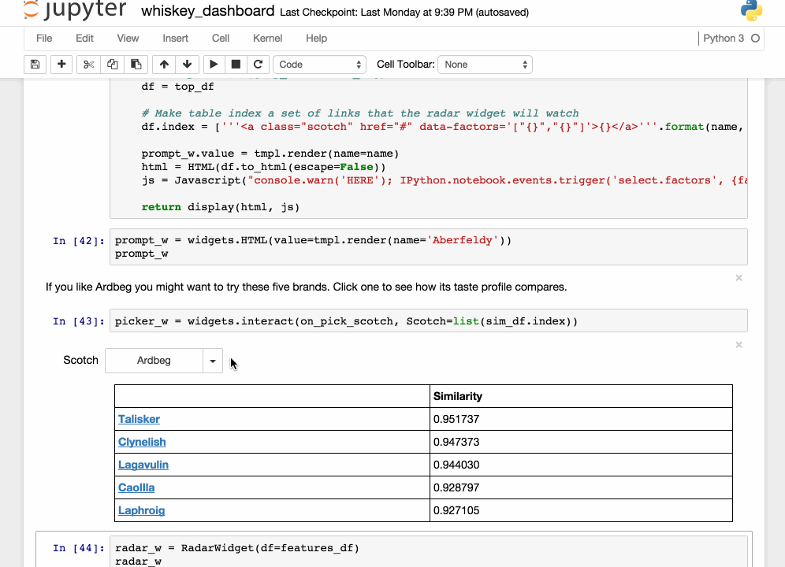

Lesson 1
The objective of these classes
is to introduce you to the Python language and all that it entails
Manipulate and move around the language; create programs and scripts

Using notebooks to prototype code, test analysis, produce reports
Automate your tasks and use the power of your machine
Overall
Convince you of its utility in business - analytics, data viz, work-flow management
Instil good coding and curation practices
Empower you with with the knowledge to migrate from archaic tools like MS Office and SAS
Give you the confidence to go out and learn on your own, so you can even teach me!
What I plan to cover
Basic Concepts
Functions & Classes
Data Analytics
Data Viz
Geospatial Analysis
Machine Learning
Scripts, Jobs & Optimisation
Team Hack'athon
Furthemore
Lessons are interactive and I encourage you to ask questions as we go.
I may throw around a lot of technical jargon, so just stop and ask me what the hell I'm talking about.
Most importantly...
remember to have fun!
Python (and coding in general) is here to make your life easier!
Why Python?
Irreverently named after Monty Python
The most important thing you'll learn is...
The Basics
Data Types
A.K.A variables
Python works with both numeric and character data
Integer
Is latin for whole number; cannot represent a fractional number
a = 5
b = -1000000
In : a // 2
Out: 2
Good for counting, ranking and categorising
Floating point
Approximates a real number to a fixed number of significant digits
c = 4.5234351111
d = 131093923.10
refers to the moving decimal
In : c * 10.0
Out: 45.234351111
Good for continuous values, measurements, parameters
Boolean
Represents a binary outcome: true or false - actually a subclass of integer
e = True # 1
f = False # 0
In : e == f
Out: False
Good for dummy variables/flags and conditions
Strings
Represents a single character or grouping of letters, defined by surround quotation marks
letter = "x"
word = "old"
name = "Fred"
number = "100"
...have a specific behaviour, but we're going to come back to this later on though
There are also other data types that you will come to find
Buffer
File
Module
*None
Sequence Types
or containers that hold many items
or containers that hold many items
Python has a number of container types
Lists
Tuples
Dicts
Sets
LISTS
Always denoted by square [...] brackets
num_list = [1, 2, 6, 1, 2]
and are generally used to hold homogeneous data types
char_list = ["A", "l", "e", "j", "a", "n", "d", "r", "o"]
while mixed types are allowed, I would generally avoid
mix_list = [5., "h", 4, "r", "k", 9i]
The parts of a list are referred to as items (or elements)
["A", "l", "e", "j", "a", "n", "d", "r", "o"]
# --------------------------------------------------> #
[ 0 , 1 , 2 , 3 , 4 , 5 , 6 , 7 , 8 ]
the term index is used to denote position and in Python always starts at 0
and we can use the index to access specific items of the list
In : name[0]
Out: "A"
In : name[5]
Out: "n"
or even chunks of it
In : name[1:7]
Out: ["l", "e", "j", "a", "n", "d"]
In : name[4:]
Out: ["a", "n", "d", "r", "o"]
The process of accessing parts of a list (or any other container) is referred to as slicing
not only can we take parts of a list, but we can also change them
name[3] = "x"
name[7] = "e"
name[8] = "r"
In : print(name)
Out: ["A", "l", "e", "x", "a", "n", "d", "e", "r"]
or
name[2] = 3
name[7] = 3
In : print(name)
Out: ["A", "l", 3, "x", "a", "n", "d", 3, "r"]
Python is also quite funky in that it allows indexing from left to right
["A", "l", "e", "j", "a", "n", "d", "r", "o"]
# --------------------------------------------------> #
[ 0 , 1 , 2 , 3 , 4 , 5 , 6 , 7 , 8 ]
and from right to left!
["A", "l", "e", "j", "a", "n", "d", "r", "o"]
# --------------------------------------------------> #
[-9 , -8 , -7 , -6 , -5 , -4 , -3 , -2 , -1 ]
Position presuposes dimensioniality, and so lists also have a size attribute
In : len(name)
Out: 9
You will see later on that both position and size are powerful reference points in automating processes
We can also modify lists by adding or removing items
Items can be added by insertion (one item)
my_list = [0, 2, 1, 0, 1, 9, 4, 0]
extra_item = 99
In : my_list.append(extra_item)
Out: [0, 2, 1, 0, 1, 9, 4, 0, 99]
or by concatenation (many items)
extra_list = [-1, -8]
In : my_list.extend(extra_list)
Out: [0, 2, 1, 0, 1, 9, 4, 0, -1, -8]
neat bit of syntatic sugar
In : my_list + extra_list
Out: [0, 2, 1, 0, 1, 9, 4, 0, -1, -8]
Be careful with append(), it considers whatever is between the brackets as one item
my_list = [0, 2, 1, 0, 1, 9, 4, 0]
extra_list = [-1, -8]
and it will become the last item in the list
In : my_list.append(extra_list)
Out: [0, 2, 1, 0, 1, 9, 4, 0, [-1, -8]]
such that you will end up with nested* items
*explained next
You can also delete items in a list
my_list = [0, 2, 1, 0, 1, 9, 4, 0]
by value (where it removes the first occurence)
In : my_list.remove(9)
Out: [0, 2, 1, 0, 1, 4, 0]
or using the delete statement with an index
In : del my_list[-3]
Out: [0, 2, 1, 0, 1, 4, 0]
I personally avoid doing this, as it's hard to to track how your list is changing in the program
I will show you later how you can use filtering to achieve the same thing without destroying your list
Lists can contain lists!
This is referred to as nesting, and allows us to create a greater number of dimensions
# 1 dimension (or flat)
list_1d = [0, 2, 1, 0, 1, 9, 4, 0]
# 2 dimensions
list_2d = [[0, 2, 1, 0], [1, 9, 4, 0]]
# 3 dimensions
list_3d = [[[0, 2], [1, 0]], [[1, 9], [4, 0]]]
Items in nested lists are accessed similarly to flat lists
list_2d = [[0, 2, 1, 0], [1, 9, 4, 0]]
In : list_2d[0]
Out: [0, 2, 1, 0]
just use extra brackets ([...]) to delve within
list_2d = [[0, 2, 1, 0], [1, 9, 4, 0]]
In : list_2d[0][1:3]
Out: [2, 1]
TUPLES
Denoted by circle (...) brackets
num_tuple = (0, 3, "Bye", False)
and tend to store heterogeneous sequences of values
They share almost the same funtionality with lists
They can be sliced in the same way
my_tuple = (1, 4, 8, 1, 1)
In : my_tuple[3]
Out: 1
In : my_tuple[2:]
Out: (8, 1, 1)
and expanded
In :my_tuple + my_tuple[2:]
Out: (1, 4, 8, 1, 1, 8, 1, 1)
as well as being similarly nested,
# 2 dimesions
tuple_2d = ((0, 2, 1, 0), (1, 9, 4, 0))
# 3 dimesions
tuple_3d = (((0, 2), (1, 0)), ((1, 9), (4, 0)))
where access is the same
list_2d = ((0, 2, 1, 0), (1, 9, 4, 0))
In : list_2d[0][1:3]
Out: (2, 1)
There are some subtle differences however
Have the unique attribute of packing, whereby comma separated values are stored into a variable
pack_tuple = 1, 3, True, "hello"
In : pack_tuple
Out: (1, 3, True, "hello")
and can be retrieved as follows
a, b, c, d = pack_tuple
In : a, b, c, d
Out: 1
Out: 3
Out: True
Out: "hello"
But the most important difference...
Tuples are immutable
this means their items cannot be changed
nor can they be deleted
for example: this is not allowed
my_tuple = (1, 4, 8, 1, 1)
In : my_tuple[1] = -9999
TypeError: 'tuple' object does not support item assignment
nor this
In : del my_tuple[1]
TypeError: 'tuple' object does not support item deletion
so the values are actually protected
What is the point of immutability?
Can be hashed; i.e. fixed in memory, which is more efficent/optimised
Protects the programmer from themselves; can't accidently change values
We will come back to this when we look at functions in the next lesson
Dicts
dictionaries
Are defined by key-value pairs that are separated by a colon, between curly braces {...}
my_dict = {"key1": value1, "key2": value2, "key3": value3}
and are a powerful way of storing and retrieving data by reference
my_rec1 = {"Jake": 35, "Finn": 16, "Gunter": 7}
or
my_rec2 = {"name": ["Jake", "Finn", "Gunter"], \
"ages": [35, 16, 7]}
To access values in the dictionary, you can reference them by their associated key
In : my_rec1["Gunter"]
Out: 7
In : my_rec2["name"]
Out: ["Jake", "Finn", "Gunter"]
then any subsequent slicing if the value is a sequence
In : my_rec2["name"][-1]
Out: "Gunter"
Adding new key:values to dictionaries is done like so
my_rec1["Marcy"] = 21
In : my_rec1
Out: {"Marcy": 21, "Gunter": 7, "Jake": 35, "Finn": 16}
and entries similarly deleted as with lists
In : del my_rec1["Marcy"]
Out: {"Gunter": 7, "Jake": 35, "Finn": 16}
You can also retrieve the key and value components separately from the dictionary
In : my_rec1.keys()
Out: ["Jake", "Finn", "Gunter"]
In : my_rec1.values()
Out: [35, 16, 7]
While keys can be any data type or value, they should be unique as you want them to give specific reference.
bad_dict = {"key1": 14239, "key1": 599, "key2": 3430}
otherwise, replicate keys will just refer to the last occurence
In : bad_dict["key1"]
Out: 599
Finally, tuple pairs...
tup2 = ("Jake": 35)
are seen as key-values pairs, such that a list (or tuple) of these can be transformed into a dict object
tup_list = [("Jake", 35), ("Finn", 16), ("Gunter", 7)]
In : dict(tup_list)
Out: {'Gunter': 7, 'Jake': 35, 'Finn': 16}
Notice how the order of the dict is different to how it's stored in the list
This is important to remember!
A dictionary is not ordered in the obvious sense.
The order of key:values entered != the order of key:values stored
Iteration
What if I want to operate on all of the values?
What if I only want to operate on some of the values?
What if the operation is repetitive?
What if the number of items is huge?
What if?
What if?
WHAT IF?
...Zzzzz...
...Zzzzz...
Say I want to add 10 to a list of arbitrary numbers
mega_list = [1, 3, 4, 1, 4, 7, 9, 999, 343 ,-1, ...]
You wouldn't want to do this
x = 10
item0 = mega_list[0] + x
item1 = mega_list[1] + x
item2 = mega_list[2] + x
item3 = mega_list[3] + x
# ad nauseum
list_plusx = [item0, item1, item2, item3, ...]
Ugh, how repetitive!
Hang on ...
don't lists, tuples and dicts have reference position (index or key) and size (or length) attributes?
["A", "l", "e", "j", "a", "n", "d", "r", "o"]
# --------------------------------------------------> #
[ 0 , 1 , 2 , 3 , 4 , 5 , 6 , 7 , 8 ]
size = 9 # items
Surely I can use this information to move around, knowing where I am and how far I can go ...
We certainly can and it's called iteration
"the process of repeating a task many times"
and Python provides two processes to do this
for loops
tend to run in a finite sense - beginning to end
do-while loops
tend to run in an infinite sense until some condition is met
For
Move in one diretion (default: left-to-right) along the sequence
my_list = [99, 22, 1, 93, 6, 3, 1, 1]
for item in my_list:
# print on screen the items in the list
print(item)
From a predefined start point (default = 0)
At a predefined step (default = 1)
Until the end of the sequence (end = size)
the loop sequentially iterates through the list one element at a time, and does something with the current item
my_list = [99, 22, 1, 93, 6, 3, 1, 1]
for item in my_list:
# print on screen the items in the list
print(item)
interprated as
Out: 99
Out: 22
Out: 1
Out: 93
Out: 6
Out: 3
Out: 1
Out: 1
example
If we go back to our problem of adding 10 to a list of numbers then we can quite easily do so
mega_list = [1, 3, 4, 1, 4, 7, 9, 999, 343 ,-1, ...]
new_list = []
for item in mega_list:
new_value = item + 10
new_list.append(new_value)
we don't need to worry about how long the list is or which item we're using, just the calculation
we can also loop through more than just one sequence, by using the handy zip() function!
my_list1 = [99, 22, 1, 93, 6, 3, 1, 1]
my_list2 = ['a', 'b', 'c', 'd', 'e', 'f', 'g', 'h']
for (number, letter) in zip(my_list1, my_list2):
print(number, letter)
Out: 99, 'a'
Out: 22, 'b'
Out: 1, 'c'
...
sequences need to be the same length to be zipped together
What about nested lists, tuples, etc.?
Easy! Just add another for loop statement
two dimensions
list_2d = [[0, 2, 1, 0], [1, 9, 4, 0]]
for level_1 in list_2d:
for item in level_1:
# do something
three dimensions
list_3d = [[[0, 2], [1, 0]], [[1, 9], [4, 0]]]
for level_1 in list_2d:
for level_2 in level_1:
for item in level_2:
# do something
etc.
What about Dictionaries?
dicts play with iterative loops a bit differently as they work by key:value reference
dicts require use to use the .items()* attribute to access their key:value pairs
my_dict = {"Jake": 35, "Finn": 16, "Gunter": 7}
for (key, value) in my_dict.items():
print(key, value)
just remember that entry-order != storage order
Out: Gunter, 7
Out: Jake, 35
Out: Finn, 16
WHILE
they operate a bit differently, in that they run infinitely until some condition is met
i = 0
while i < len(my_list):
print(my_list[i])
i += 1
they operate a bit differently, in that they run infinitely until some condition is met
i = 0
while i < len(my_list):
print(my_list[i])
i += 1
Be careful when using while loops
make sure the condition is valid
i = 0
# will never run
while i > len(my_list):
print(my_list[i])
i += 1
# index is already greater than the list size
and that it iterates correctly
i = 0
# this will run forever
while i < len(my_list):
print(my_list[i])
# nothing to increment index
You are better of using for loops when working with lists
Iteration and edge conditions are taken care of for you
But if you want to control how we iterate through a list (skipping values, etc.) we need to look at one last important concept
IF ELSE
conditionals
if else
statements allow us to control the flow of a process
using simple binary [0, 1] outcomes
Example
we use conditionals to perform simple tests
# syntax to close a door
door_open = True
if door_open == True:
print("closing door")
door_open = False
else:
pass
print("already closed")
somtimes we may want to test more than one condition
x = 15
if (x > 10) | (x < 20):
print("within bounds")
else:
print("outside bounds")
and we can also have many outcomes
if age < 20:
print("Person is young")
elif (age >= 20) & (age < 30):
print("Person is young-ish")
elif (age >= 30) & (age < 40):
print("Still quite young")
elif (age >= 40) & (age < 60):
print("Person is in their prime")
else:
print("errrr, no comment")
that test different conditions
Now let's look at how we can combine
if else
with
for
imagine a list of random numbers where you're only interested in values greater than 10
how can I filter my list to only deal with these numbers
????????
Easy!
just throw an if
statement into your list
my_list = [5, 3, 1, 77, 31, 24, 2, 4, -1, 100]
for item in my_list:
if item > 10:
# do something with it
print(item)
else:
pass
Easy!
just throw an if
statement into your list
my_list = [5, 3, 1, 77, 31, 24, 2, 4, -1, 100]
for item in my_list:
if item > 10:
# do something with it
print(item)
else:
pass
Easy!
just throw an if
statement into your list
my_list = [99, 22, 1, 93, 6, 3, 1, 1]
for item in my_list:
if item > 10:
# do something with it
print(item)
else:
pass
What if we want to do something a bit more complicated?
like compare the current value with the previous one?
enter our good friend
enumerate()
which allows us to get the index along with the value
for (i, item) in enumerate(my_list):
print(i, item)
returns a tuple of (index, value)
Out: 0, 99
Out: 1, 22
Out: 2, 1
Out: 3, 93
Out: 4, 6
Out: 5, 3
Out: 6, 1
Out: 7, 1
so in reference to our problem
for (i, item) in enumerate(my_list):
# first element can't be compared
if i > 0:
if my_list[i-1] < item:
print("bigger")
else:
print("smaller")
Out: "smaller"
Out: "smaller"
Out: "bigger"
Out: "smaller"
Out: "smaller"
Out: "smaller"
Out: "smaller"
enumerate() is quite versatile - you can grab indices for
zip-ped lists
for (i, (item1, item2)) in zip(list_1, list_2):
# stuff happens
and dicts
for (i, (key, value)) in my_dict.items():
# stuff happens
just note that in these cases you are dealing with a nested tuple
summary
we ♥ numbers and words
we ♥ lists
we ♥ iteration
we ♥ if else statements
we ♥ Python
remember
the basics are hard!
..but
it gets easier the more you use it
Finally
don't be daunted
be humble
be adventurous
practice
practice
practice